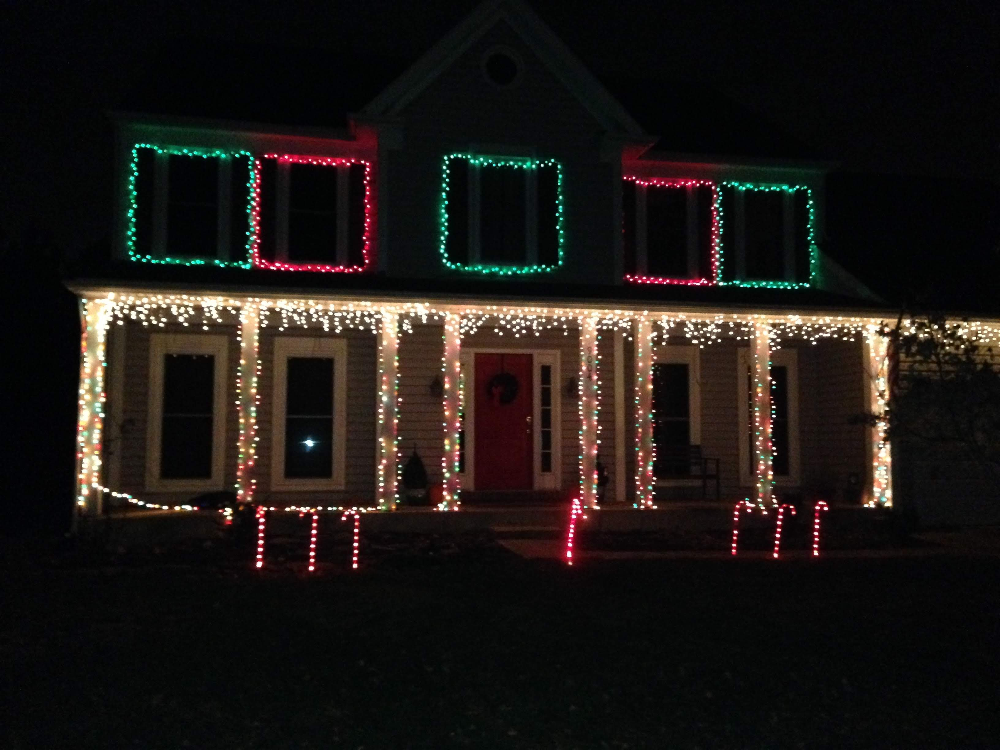
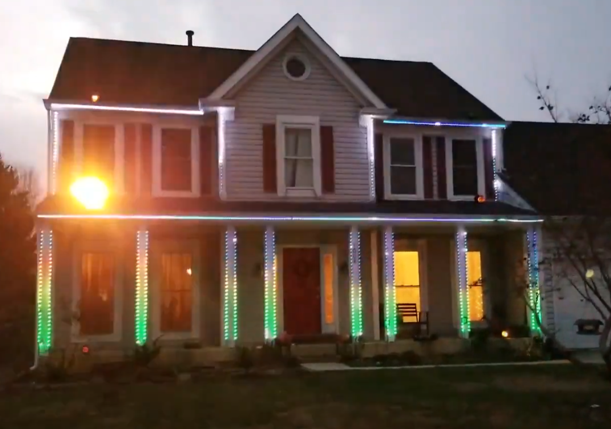
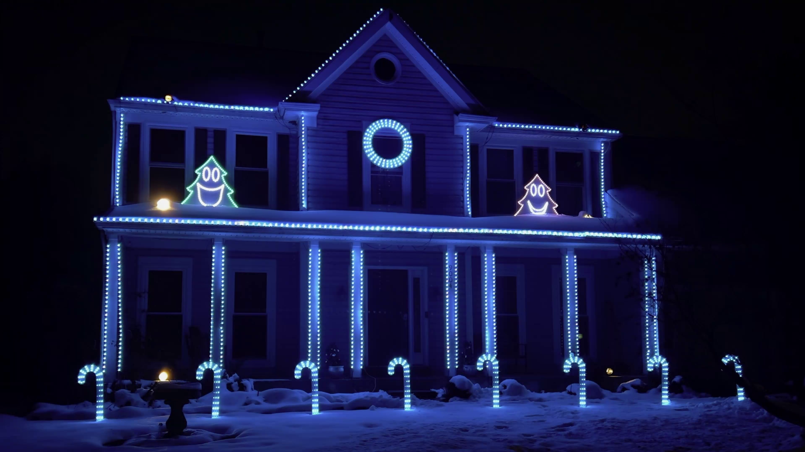

The History
In 2017, when I was 15 years old, I saw a video of a Christmas light show online and thought I HAD to do that too. So, I hacked together a board that could control 16 channels of regular, AC Christmas lights and created a very simple show on my parents' house. This was only meant to be a test for my eyes only, but as I mentioned my project to my friends they were all amazed by the display!

Because of the unexpected success in my first "test" year, I decided to dive in and purchase color-changing LED pixels, just like the ones seen lighting the display today. This changed the game in how I programmed my shows and opened up the doors to many posibilities. Like the previous year, I started simple, but this time made it a bit more public. Neighbors, friends, and family loved the unique and fun show as this was the first one of its kind in my town.
I kept the show going without many changes until 2021, when I decided to do a complete overhaul and add more rooflines, candy canes, singing trees, and a wreath. These new props are what tied the show together and allowed me to further engage with viewers through singing, jokes, puns, and, of course, fun songs. After going viral on the social media platform Nextdoor, I was approached by a WTOP reporter who wrote a story that was distributed all around the country. Soon, cars filled with eager families packed out the neighborhood, patiently waiting their turn to see the show.

Unfortunately, due to the nightly high traffic volumes created by the show, hosting the show at my
parents' house was not feasible anymore, so I started looking for a new venue. Thankfully,
Cornerstone Church reached out and requested a show installed on their building, which brings us
here where we are today. This show has over five times the amount of lights as previously, and is
by far the most intense project I have ever completed.
I am so excited for the future of this project and am looking forward to many future years of
bringing joy to families from all over the country.